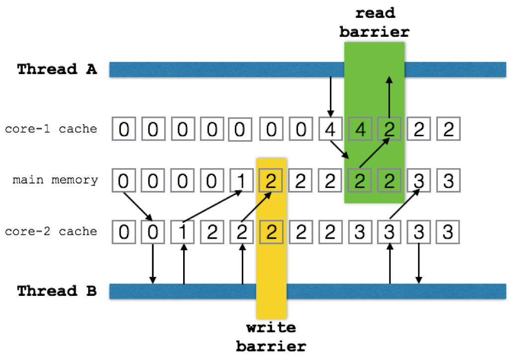
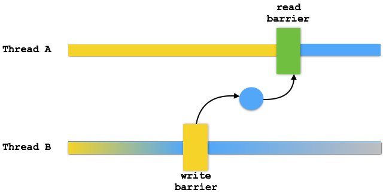

In OSGi you will write code that runs in a multi-threaded environment. There are no safe guards, no hand-rails, and no warning signs. When you register a service anybody can call you at any moment in time. In multi-core CPUs (are there any others?) your code can execute multiple times in any given instant. There will be dragons here.
Except for a few sissy Java EE App servers, this is the standard way of working for Java. Get over it, accept it! You must consider the concurrency issues of your code. For this, there are some excellent books out there that explain the issues. The most famous one being Brian Goetz’ book Java Concurrency in Practice, the bullet train book.
This App note attempts to handle some of the important issues when you write OSGi applications, especially with DS. However, being an app note it of course remains on the surface of this complex topic.
The App note has a complementary workspace with all the different components that are used to discuss the issue. You can find this workspace on Github. If you want to understand the many patterns better then load this workspace in Bndtools and run the tests. (As a note, all components use service=… only to make them easier to test.)
This App Note was sponsored by SMA.
Today’s multi-core CPUs are amazing pieces of technology that use every trick in the book to get the awesome performance we see today. To achieve this power CPU designers could not maintain some invariants that software developers were accustomed to.
For a software developer it is horror to think that writing a variable does not mean that all executing code can see the new content. Unfortunately, this is life on modern multi-core CPUs. The following code looks like it should stop but it might not on a multi-core machine.
@Component(service=StopLoopWithNormalVariable.class)
public class StopLoopWithNormalVariable extends Thread {
boolean stop;
@Activate
void activate() {
start();
}
public void run() {
while (!stop)
;
}
@Deactivate
void deactivate() {
stop = true;
}
}
The reason is that the background loop could run on its own core. This core has
its own cached copy of main memory because main memory is too slow to access on every usage.
So when the deactivate method writes a true in the stop variable, the background
thread remains oblivious of this since it uses its cached copy.
Sometimes the code actually works as one would expect. Strangely enough, if you run this code in the debugger with a breakpoint in the loop then it will work as expected. This is not a Heisenbug but is caused because the debugger inadvertently causes the caches to be synchronized with main memory. As the debugger demonstrates, this is a non-deterministic effect and any good developer should hate this kind of indeterministic behavior.
That is why Java has a memory model. This does not make it easy but at least it makes it predictable.
The following picture shows some key aspects of this memory model:

The model allows each core to execute independently from each other core using its own cached main memory. Though the cache can hide updates from other cores haphazardly, two constructs force the situation to become deterministic.
The first construct is the volatile keyword. When a volatile variable is written the VM must ensure that, directly after the instruction, the cache is finished writing all prior updates to main
memory. When a volatile variable is read the value must be the same as in main memory.
These are called the write barrier and the read barrier.
What happens between read and write barriers is left to the implementation. Compilers and cores are free to reorder reads and writes for any reason they see fit. (Usually to make your code run faster.) However, if you can prove a variable is written before a volatile write then that variable must be visible for anybody that has done a volatile read. For example,
int a, b, c;
volatile int v;
void foo() {
a = 1;
b = a + 1;
c = b * a;
v = c * c;
}
Another thread may see the assignment of c before the assignment of a (or not at all) but
after it reads v, the other variables must have their proper values assigned.
To write proper code it is therefore paramount to understand the happens before relation. Fortunately, the OSGi specifications make it very clear what the order of certain operations is. Once the order is defined, you have a proper happens before relation and you’re guaranteed to see anything that was written before you were called.
As a note, a happens before relation is always between two threads although it is transitive between threads. In the following picture the colors of the thread bars show that though thread B makes lots of modifications, these modifications are only defined to be visible by thread A after thread B had a write barrier and thread A a read barrier. That is, there’s been established a firm happens before relation.

A bit of warning here. The tricky part is that most code that calls out to other libraries tends to go through lots of read/write barriers and works as intended. However, there is no guarantee until you can prove that there is a proper happens before relation. That is, your code works fine in the debugger but fails in runtime. That is, the fact that something works for you is not an indication that you’ve done your work properly.
Volatile variables are not atomic. For example, the following code can fail:
volatile int v;
void foo() { v++; } // BAD!!!!
In this example it is possible to miss an increment because thread A can read the variable in a register, increment it, and then store it. However, when we’re unlucky another thread reads the same value, increments it and stores it as well. This will lose one of the updates. The more cores you have, the higher the chance this will happen but it can actually also happen on a single core machine.
How do we protect against this?
First, there are special types in java.util.concurrent that provide high level
constructs that prevent many of the problems that plague the initial synchronized.
For this example, the Atomic Integer would be the most practical solution.
final AtomicInteger v= new AtomicInteger(0);
void foo() { v.incrementAndGet(); }
However, it helps understanding the problems these high level constructs solve by
taking a look at the synchronized keyword. Some problems are easier to solve with the
synchronized keyword.
For this problem, Java knows the construct of a synchronized block. A synchronized block takes a lock object. When the synchronized block is entered it attempts to get a lock on that object for the current thread. Only one thread can get this lock at any moment in time.
Once the thread has the lock, it will perform a read barrier, ensuring that the cache and the main memory are synchronized. This brings us in the wonderful position that we are the only thread that owns the locked object and has a correct view of main memory. This of course does not mean other threads see the same main memory. Other threads should defer working with these variables except when inside a synchronized block that protects them.
We can now read, make a decision on the value, and write without having to worry that other threads interfere if they lock on the same object while writing those variables.
At the end of the synchronized block the VM will create a write barrier, waiting until all writes so far are flushed to main memory. Only then will it release the lock.
Therefore the following code would properly count the number of calls to foo.
int v;
final Object vLock = new Object(); // protectes v
void foo() {
synchronized(vLock) {
v++;
}
}
Since the synchronized block does a read barrier just after it gets the lock and a write barrier just before it returns the lock we’re guaranteed the following:
vSynchronized blocks are slow due to the lock and crossing two barriers. They also have limitations.
A synchronized block must be short and should not call out to foreign code. Foreign code is code that is not under the same control as the author of the synchronized block. The danger is that a synchronized block can cause a deadlock that way. Thread A is in a synchronized block and causes Thread B to wait for that synchronized block. Since A now waits for B and B waits for A they are in a deadly embrace. The chance for deadlocks is increased massively with nested synchronizations.
If you cannot avoid blocking then make sure that you always acquire locks in a consistent order. If one order is always followed for multiple locks then a deadlock cannot occur.
For this reasons synchronized blocks should only be used for the update of owned
data structures and not call out to foreign code. They should also not use any
object that is available outside their private scope. That is, never use a
service object to synchronize on since anybody can do that. Either use a private
object that plays a role in the scenario or create a specific object for it
with new Object. If you have a number of variables that are protected by the
same lock then it might be a good idea to put all of them in a private class:
static private class Atomic {
int a;
int b;
}
final Atomic together = new Atomic();
void foo() {
synchronized(together) {
together.a++;
together.b--;
}
}
Last but not least, never use the wait() and notify() methods associated with
synchronized blocks. Those use cases have effectively been replaced with the
many utility types in java.util.concurrent. For example, in the increment example, there
is a perfectly valid replacement with the AtomicInteger
class that has an increment method. However, in certain cases when the decision is
more complicated there is still use for the synchronized blocks.
For example, the following code serializes the execution of a Runnable without requiring support for background threads. If no Runnable’s are in progress it will execute on the current thread otherwise it queues the Runnable to be executed after the current queued Runnable’s are finished.
Clearly, this requires atomic decisions. First we must decide if there are one or more Runnable’s in progress when we arrive. Second, we need to decide if there are Runnable’s queued once we’ve ran a Runnable.
@Component(service=Serializer.class)
public class Serializer {
List<Runnable> serialized = null;
Object lock = new Object();
public void serialize(Runnable runnable) {
synchronized(lock) {
if ( serialized != null ) {
serialized.add(runnable);
return;
}
serialized= new ArrayList<>();
}
while(true) {
try {
runnable.run();
} catch (Exception e) {
e.printStackTrace();
}
synchronized(lock) {
if ( serialized.isEmpty() ) {
serialized = null;
return;
}
runnable = serialized.remove(0);
}
}
}
}
(If the serialize method is very heavily used then this algorithm may block progress on a single thread since it must keep serving the queue. But you saw that of course?)
Since synchronized blocks are deadlock prone many algorithms have been developed to solve concurrent problems with lock free structures. In general these structures replace locks with a retry model. Modern processors have compare and set instructions that can atomically set a memory location while returning the previous value. Though this must pass the memory barriers it is more efficient in comparison with a lock.
There frequently is a potential race condition between the close operation
caused by an unbind method and the deactivate method in DS. In such cases it is
a good idea to create a close method that can be called multiple times. The
standard pattern is to use an Atomic Boolean.
final AtomicBoolean open = new AtomicBoolean(true);
public void close() {
if ( open.getAndSet(false) == false )
return;
// free to do the close operations
// without worrying about this race condition
// and we're not holding a lock!
}
Such a method guarantees that only the ‘first’ close operation will execute the close. The close code will then run safely outside any lock.
In many aspects DS is a dependency injection (DI) engine similar to Spring, Guice, or CDI. However, in contrast with these DI engines DS components have a life cycle. This adds the dimension of time to the component, something that is utterly lacking in any other DI engine. DS components are dynamic.
Though this extra dimension provides tremendous power it clearly comes with the burden that things do not only get initialized, it is also possible that things go away.
DS goes out of its way to hide that complexity. The way DS achieves this is through very strong guarantees. DS absorbs a tremendous amount of complexity so that you don’t have to worry about it. However, many a developer writes their code defensively and overly locks/synchronizes parts. So let’s see what we can rely on.
DS provides a very strict ordering. This ordering implies that there is a very clear happens before relationship between the different phases. There is no gain using volatile variables or other synchronization constructs between these phases because this is already been done by DS. That is, if you set an instance variable in the constructor then there is a full guarantee that this variable is visible in the bind or activate methods even if these methods, as is allowed, were called on different threads.
The following is the guaranteed ordering that a DS component can observe:
Lazy services are registered before their constructor is called. The initialization of the DS component will take place when the service is used for the first time. However, this should not be observable by the component itself.
The default and simplest model of DS is to use static references. If a component only has
static references then it never sees any of the OSGi dynamics. This means that
with the given ordering there is no need to use volatile or other
synchronization constructs for static references. (Of course the service methods are
still called from different threads.) Field injection is the most
simple way but bind and the optional unbind methods do not require any synchronization constructs.
Sadly, many developers that start using dynamic references making the grave error of premature optimization. Yes, you can wring more performance out of a computer making these components dynamic but it is rarely worth the added complexity. Only go to dynamics with things like the whiteboard and/or when you measure a significant cost for being static. In almost all cases the static model where the component is destroyed and then recreated works extremely well … really.
Anyway, remember the rules about optimization:
Sometimes a component can deliver its functionality even when a reference is absent. This is then an optional reference. By far the simplest method to handle this is to make the reference optional by specifying the cardinality:
@Component(service=ReluctantOptionalReference.class)
public class ReluctantOptionalReference {
@Reference(cardinality=ReferenceCardinality.OPTIONAL)
Foo reluctantOptionalReference;
}
However, this is a static reference. This implies that the component is started
regardless of the presence of Foo. If Foo happens to be there then it is injected
otherwise the field remains null. This model is called reluctant.
Unfortunately, this means we miss the Foo service when it is registered a few nanoseconds later. Since the static model has so many advantages there is an option to reconstruct the component when this reference finds a candidate. This is the greedy mode:
@Component(service=GreedyOptionalReference.class)
public class GreedyOptionalReference {
@Reference(
cardinality=ReferenceCardinality.OPTIONAL,
policyOption=ReferencePolicyOption.GREEDY)
Foo greedyOptionalReference;
}
DS will now reconstruct the component when there is a better candidate for
foo. Clearly any candidate will beat no candidate but what means better in the
case that we already have foo?
When multiple candidates are available DS will sort them by ranking. Services
with a higher ranking are deemed better. Service ranking is indicated by a
property called service.ranking. It is an integer, higher is better.
One of the advantages of the static model is that in your activate method all the way to your deactivate method your visible world won’t change.
The previous examples were still static because none of the references changed
between the activate and deactivate phase. The greedy policy option achieved
its replacement by reconstructing the component. This is acceptable in most
cases but sometimes the component does not want to die for the sake of an
optional reference. In that case we can handle the situation dynamically.
By far the easiest solution is to mark the field as volatile. A volatile
field will automatically get marked as policy=DYNAMIC.
@Component(service=DynamicOptionalReference.class)
public class DynamicOptionalReference {
@Reference(cardinality=ReferenceCardinality.OPTIONAL)
volatile Foo dynamicOptionalReference;
}
This is simple but there is an obvious price. The following bad code shows
a common (but horrible) pattern that people use to use foo:
if ( foo != null ) // BAD!
foo.bar();
This innocuous looking code is actually a Null Pointer Exception in the waiting. A better way is to do:
Foo foo = this.foo;
if ( foo != null )
foo.bar();
By using a local variable we guarantee that the check (is foo null?) is using the
same object as the one we will call bar() on. This is a very cheap form of
synchronization.
A common question that now appears is: ‘What if the service goes away?’. You could be in the process of calling a service when it becomes unregistered. Sometimes this will cause the service to throw exceptions sometimes you get a Service Exception.
In general it is one of those cases where ‘shit happens’. In a concurrent environment like Java it is possible to end up in a sad place. Your code should always be prepared to accept exceptions when you call other services. This does not mean you should catch them, on the contrary. It is much better to forward the exceptions to the caller so that they do not unnecessarily get wrapped up in wrapping exceptions and lose the original context.
In almost all cases there is a top level function that initiated your request. It is this function that has the responsibility to make sure the overall system keeps working regardless of failures. This kind of robustness code is extremely difficult to get right and should never be mixed with application code.
However, any locks you hold in a method should be released and resources should be closed. Any code you call can cause exceptions. Relying on other code and not handling their exceptions (even if they are not declared) is living a very optimistic, naive, and likely short professional life.
If you use a whiteboard pattern or other listener like model then in general you want to use dynamics. The reason is that you have multiple references and building and destroying the component at every change in the set of services we’re interested in (the tracked services) becomes expensive.
By far the easiest method is to use field injection of a list of services.
If you make this field volatile then DS will inject a new list whenever the
set of tracked services changes.
@Component(service=SimpleList.class)
public class SimpleList {
@Reference
volatile List<Foo> dynamicFoos;
}
However, there are many scenarios where the component must interact with the bind and unbind of the references. The most common way is then to create a bind and unbind method.
@Component(service = DynamicBindUnbind.class)
public class DynamicBindUnbind {
final List<Foo> foos = new CopyOnWriteArrayList<>();
@Reference(
cardinality = ReferenceCardinality.MULTIPLE,
policy = ReferencePolicy.DYNAMIC)
void addFoo(Foo foo) {
foos.add(foo);
}
void removeFoo(Foo foo) {
foos.remove(foo);
}
}
In this example we use a CopyOnWriteArrayList. This is a so called non-locking
object. Though it is perfectly safe to use in a concurrent environment it will not
use locks and any iteration over that list is guaranteed not to fail. Many list
types in Java will fail with a Concurrent Modification Exception if you add/remove
a value while another thread iterates. A CopyOnWriteArrayList won’t. It has a simple
trick for this. Instead of adding a new element to the list, it replaces the
internal storage array with a new array. Iterations iterate over this array. Though
this means the iteration can visit stale objects, the length of the array and its
content will never change. Each iteration will be bound to a single generation.
Clearly, the previous example is identical to the volatile List example where DS
did the trick of CopyOnWriteArrayList replacing the list whenever there was a
change. Usually the bind/unbind methods are used when it is necessary to
do something with the referenced service. A common case is indexing the service
in a map with a service property. This looks as follows:
@Component(service=PlainIndexedServices.class)
public class PlainIndexedServices {
final ConcurrentMap<String, Foo> plainServices = new ConcurrentHashMap<>();
@Reference(
cardinality=ReferenceCardinality.MULTIPLE,
policy=ReferencePolicy.DYNAMIC)
void addFoo(Foo foo, Map<String, Object> props) {
String key = (String) props.get("id");
if (key == null)
return;
plainServices.put(key, foo);
}
void removeFoo(Map<String, Object> props) {
String key = (String) props.get("id");
if (key == null)
return;
plainServices.remove(key);
}
}
This example shows a number of non-obvious issues. First the ConcurrentHashMap is
a thread safe non-locking map. We can safely use it and we’re guaranteed that it won’t
lock. (It achieves this by retrying its operations so this does not mean it
returns immediately.)
Second, it does not handle the situation when the “id” property is not used in a unique way. If multiple different services use the same id then this code could get confused.
In numerous cases when we use indexed services we need to track a number of variables based on each service. That is, when a new service enters the system we need to do some work that creates data we do not want to loose until we no longer track the service.
In an object oriented environment the easiest way is to create a wrapper around the service. This wrapper can hold the per-service data and we can use its methods to handle the behavior. A simplistic example:
class Wrap {
final Foo foo;
boolean closed;
public Wrap(Foo foo) {
this.foo = foo;
}
public void close() {
closed = true;
}
}
This raises a life cycle issue. In the previous example we ignored any services that went away or had the same id. This is acceptable because we had no cleaning up to do after the service disappeared. With a wrapper there is no such luxury since we need to close the wrapper. We therefore need to detect duplicates and we need to detect and handle them in a thread-safe way.
The Concurrent Map API specifies that both put and remove return the object
that was at that moment associated with the given key. The concept of previous is
an atomic concept. That is, if a key is removed twice on different threads only one
will return a previous value and the other will receive null.
In both the add and remove bind methods we therefore need to close the
previous wrapper, if any.
@Component(service=WrappedIndexedServices.class)
public class WrappedIndexedServices {
final ConcurrentMap<String, Wrap> wrappedServices = new ConcurrentHashMap<>();
@Reference(
cardinality=ReferenceCardinality.MULTIPLE,
policy=ReferencePolicy.DYNAMIC)
void addFoo(Foo foo, Map<String, Object> props) {
String key = (String) props.get("id");
if (key == null)
return;
Wrap previous = wrappedServices.put(key, new Wrap(foo));
if ( previous != null) {
previous.close();
}
}
void removeFoo(Map<String, Object> props) {
String key = (String) props.get("id");
if (key == null)
return;
Wrap previous = wrappedServices.remove(key);
if ( previous != null) {
previous.close();
}
}
}
In the previous example there was the implicit assumption that there was a unique key per service. However, in some use cases a key can map to multiple services. This complicates our problem a bit. Let’s first design a holder for our services
class Holder {
final Set<Foo> foos = ConcurrentHashMap.newKeySet();
boolean add( Foo foo) {
return foos.add(foo);
}
boolean remove( Foo foo) {
return foos.remove(foo);
}
}
Since Java does not have a ConcurrentSet we create one by using the key set from the Concurrent Hash Map. A bit hackish but the only way in Java.
Since the bind/unbind methods are called concurrent we must ensure that we atomically
process the addition of the first and the removal of the last. In this code we
use the compute methods on Concurrent Map.
@Component(service=HolderIndexedMultipleServices.class)
public class HolderIndexedMultipleServices {
final ConcurrentMap<String, Holder> multis = new ConcurrentHashMap<>();
@Reference(
cardinality=ReferenceCardinality.MULTIPLE,
policy=ReferencePolicy.DYNAMIC)
void addFoo(Foo foo, Map<String, Object> props) {
String key = (String) props.get("id");
if (key == null)
return;
multis.compute(key, (k,v) -> {
if ( v == null)
v = new Holder();
v.add(foo);
return v;
});
}
void removeFoo(Foo foo, Map<String, Object> props) {
String key = (String) props.get("id");
if (key == null)
return;
multis.computeIfPresent(key, (k,v) -> {
v.remove(foo);
return v.foos.isEmpty() ? null : v;
});
}
}
The compute methods map an old value to the next value. However, no lock is held,
which implies that the mapping method can be called multiple times. This requires
therefore that our mapping function is idempotent.
That is, we must be able to call it multiple times without creating side effects. For this reason we use a
Set instead of a List to ensure there are no duplicates. Adding to a list could cause multiple same Foo
services to be the list.
In the removeFoo method we use the computeIfPresent method which only calls our
mapping function if the key already exists. Again, also this function can be called multiple
times and must also be idempotent.
You can find the code for these examples here;
A very nasty problem exists when there are cycles in your service references. If component Bottom has a static reference to component Top and Top has references to all Bottom’s then you have a cycle. This is not an uncommon case but will not work in a simple way with DS even though the specification explicitly allows it for dynamic references. The problem is that many services are lazy.
DS implementations run into problems when the Top component is being injected with the dynamic Bottom services. If Bottom is defined as lazy then the construction of Bottom fails.
A lazy service is registered as a service but not yet created. It is created on demand. However, the demand comes from the exact object that needs to be injected so it is not yet ready for injection. You will therefore get an error like ‘Circular reference detected, getService returning null’.
The best solution to this problem is to make the Bottom service immediate. Since
the Bottom service has a mandatory reference on the Top service it will not register
a service before the Top component is registered as a service. Once the Top service is registered,
the Bottom service(s) are satisfied and can then register. This registration will then
cause their injection in the Top component since Top has dynamic references to
Bottom.
@Component(service=Top.class,immediate=false)
public class Top {
@Reference
volatile List<Bottom> circularReferenceToBottoms;
}
@Component(service=Bottom.class, immediate=true)
public class Bottom {
@Reference
Top circularReferenceToTop;
}
See for the code here.
One of the easiest ways to prevent concurrency problems is to execute all code on a single thread. This is called thread confinement. Any work that gets queued on this thread will then not require any synchronization. This pattern is used in many cases to actually increase performance because the only synchronization required is the queuing of the the work operations. All work can then be executed without locks and barriers inside the thread.
However, these loops must be extremely well protected against exceptions. Once the background thread loop exits it is game over. The following code shows a background thread that executes the work in a single thread.
@Component
public class Background extends Thread implements Work {
final BlockingQueue<Runnable> queue = new LinkedBlockingQueue<>();
int counter;
public Background() {
super("Background");
}
@Activate
void activate() {
start();
}
@Deactivate
void deactivate() {
interrupt();
}
@Override
public void work() {
queue.add(() -> {
counter++;
});
}
public void run() {
while (!isInterrupted())
try {
Runnable take = queue.take();
try {
take.run();
} catch (Exception e) {
e.printStackTrace();
}
} catch (InterruptedException e) {
interrupt();
return;
} catch (Throwable e) {
e.printStackTrace();
} finally{
System.out.println("Exiting background");
}
}
}
You can find the code here.
A related problem is when IO needs be processed synchronously, for example a TCP/IP socket server. The inner loop is even more complicated than the inner loop of the simple queuing example because there are more failure scenarios.
This is surprisingly complex as the following code testifies:
@Component(immediate=true)
public class BackgroundIO extends Thread {
ServerSocket serverSocket;
@Reference
Executor executor;
public BackgroundIO() {
super("BackgroundIO");
}
@Activate
void startBackgroundThread() {
start();
}
@Deactivate
void stopBackgroundThread() throws IOException {
interrupt();
bestEffortClose(serverSocket);
}
public void run() {
List<Socket> openConnections = new CopyOnWriteArrayList<>();
try {
while (!isInterrupted())
try {
serverSocket = new ServerSocket(0);
while (!isInterrupted()) {
Socket connection = serverSocket.accept();
try {
openConnections.add(connection);
processConnection(connection,openConnections);
} catch (Exception e) {
e.printStackTrace();
}
}
} catch (Exception t) {
// No report of exceptions
// when we're interrupted
if (isInterrupted())
return;
t.printStackTrace();
try {
// Prevent overload (e.g. bind exception
Thread.sleep(1000);
} catch (InterruptedException e) {
interrupt();
return;
}
}
} catch (Throwable t) {
t.printStackTrace();
throw t;
} finally {
bestEffortClose(serverSocket);
openConnections.forEach( this::bestEffortClose );
}
}
private void bestEffortClose(AutoCloseable s) {
try {
if ( s == null)
return;
s.close();
} catch( Exception e) {
//ignore
}
}
private void processConnection(Socket connection, List<Socket> openConnections) {
executor.execute(() -> {
try {
while(connection.isConnected()) {
// do work
}
} finally {
openConnections.remove(connection);
bestEffortClose(connection);
}
});
}
}
In many scenarios it is necessary to send events to other services; this often happens in whiteboard scenarios. Just like the background loops, event loops must be written very defensively to not kill the main task of the service. This often is an argument to use the OSGi Event Admin to handle the events since the Event Admin will handle many scenarios where an Event Handler acts badly.
However, in certain cases it is necessary to handle these events in your code. The following is a template for a well protected event loop with blacklisting.
@Component(service = EventLoop.class)
public class EventLoop {
@Reference
volatile List<EventHandler> handlers;
final Map<EventHandler, Long> blacklist = Collections
.synchronizedMap(new WeakHashMap<>());
@Reference
Executor executor;
public void dispatch(int n) {
handlers.stream()
.filter(this::timeout)
.forEach((handler) -> dispatchInBackground(n, handler));
}
private void dispatchInBackground(int n, EventHandler handler) {
executor.execute(() -> {
try {
handler.send(n);
} catch (Exception e) {
blacklist.put(handler, System.currentTimeMillis() + 5000);
e.printStackTrace();
}
});
}
boolean timeout(EventHandler handler) {
long currentTimeMillis = System.currentTimeMillis();
Long timeout = blacklist.get(handler);
if (timeout != null) {
if (timeout > currentTimeMillis)
return false;
blacklist.remove(handler);
}
return true;
}
}
You can find this code here.
Though threads are in general not as expensive as developers think, they do consume resources. In many systems significant performance gains can be achieved when processing is done asynchronously instead of calling a blocking API.
In these scenarios the OSGi Promise is a friend because it provides a simple but very powerful model to chain asynchronous calls while not forgetting exception management. The basic model of a Promise is:
Promise<Bar> getBar() {
Promise<Foo> p = startFoo();
return p
.then( this::step1 )
.then( this::step2 )
.then( this::step3 )
.then( this::step4 )
.then( this::step5, this::failure );
}
In the real world this code will execute completely independent of its invocation. Each step will be executed when the previous step is resolved. The best part of it all is that when any of the steps fail, the final promise failure method is invoked. This makes it relatively easy to sequence a number of steps without blocking a thread.
A Promise is created with a Deferred. The template for using a Promise looks like:
@Component(service = Factorial.class)
public class Factorial {
@Reference
Executor executor;
public Promise<BigInteger> fac(long n) {
Deferred<BigInteger> deferred = new Deferred<>();
executor.execute(() -> {
try {
BigInteger result = BigInteger.ONE;
for ( int i= 2; i<n; i++) {
result = result.multiply( BigInteger.valueOf(i));
}
deferred.resolve(result);
} catch (Throwable e) {
e.printStackTrace();
deferred.fail(e);
}
});
return deferred.getPromise();
}
}
You can find this code here.
The activate method (a method marked with the @Activate annotation) is called before the service is registered. This method should not stay away too long. What to do when there is some lengthy initialization? A common pattern is to start the initialization on a background thread but then block in all methods that require the initialization to have finished. These are the service methods and also the deactivate method.
An ideal object for this is the OSGi Promise. It can defer an operation to the future. In the following example we show how to use a promise to:
The following code implements this.
@Component
public class Initialize implements Work {
Promise<Delegate> promise;
volatile boolean closed;
@Reference
Executor executor;
@Activate
void activate() throws Exception {
Deferred<Delegate> deferred = new Deferred<>();
executor.execute(() -> {
try {
Thread.sleep(2000); // long running init
deferred.resolve(new Delegate());
} catch (Exception e) {
deferred.fail(e);
}
});
promise = deferred.getPromise();
}
@Override
public void work() throws Exception {
promise.getValue().work();
}
@Deactivate
void deactivate() {
promise.onResolve(this::close);
}
void close() {
closed = true;
}
}
You can find this code here.
If the configuration of a component changes then DS can dynamically update the component if it defines a modified method. This method must be marked with the @Modified annotation. The following is an example.
@Component(service=DynamicModifiedConfiguration.class, configurationPolicy=ConfigurationPolicy.REQUIRE)
public class DynamicModifiedConfiguration {
int config;
@interface Config {
int config() default 1;
}
@Activate
void activate(Config config) {
this.config = config.config();
}
@Modified
void modified(Config config) {
this.config = config.config();
}
}
You can find this code here.
If the service properties of a service change while a component has a reference then the
component must be reactivated unless it has defined an updated method. The updated
method is added by giving it the name of the reference prefixed with updated. The
following code shows this:
@Component(service=DynamicUpdatedReferenceProperties.class)
public class DynamicUpdatedReferenceProperties {
int foo;
@Reference
void setFoo( Foo foo, Map<String,Object> map) {
this.foo = (int) map.getOrDefault("property", -1);
}
void updatedFoo( Map<String,Object> map) {
this.foo = (int) map.getOrDefault("property", -2);
}
}
You can find this code here.
Concurrency and its associated areas are hard. Software is hard. We hope that this app note helped you see a number of error scenarios and provide you with some patterns to solve these problems.
If you know more patterns and/or error scenarios then do not hesitate to provide a Pull Request on this repository. This is one way of saying thank you.